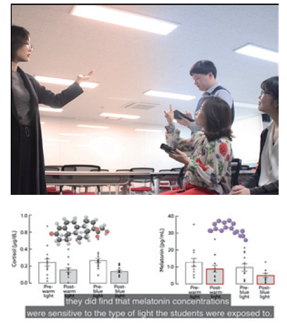

연구성과 10선
연구성과 10선
KAIST RESEARCH ACHIEVEMENTS
아침 시간 청백색 조명의 각성 효과
산업디자인학과 석현정
요약
색채를 지각하는 감광세포와 별도로 인간의 망막에는 제3의 광수용체라 불리우는 감광신경절세포(ipRGCs)가 생물학 분야에서 화두이다. 이에 본인이 조명 디자인 분야에서 관찰해왔던 청백색 조명의 집중 효과에 대한 원인을 생물학적 관점에서 찾을 수 있으리라 기대하였고, 특히 청색에 민감도가 높은 ipRGCs를 청백색으로 튜닝된 조명으로 자극한다면 건강한 일반인이 아침 시간에 필요한 각성과 상쾌함을 유도할 수 있겠다는 가설로 연구를 시작하였다. KAIST 재학 중인 건강한 남녀 학생을 모집하고 강의실 공간에서 수업 상황을 연출하였다. 따뜻한 색감(3500K)과 시원한 색감(6500K)의 백색 LED를 활용하였으며, 500lx 수준의 중간 밝기로 천장 배광하였다. 멜라토닌과 코티솔 분비량, 그리고 주관적 평가를 반복 측정한 결과, 높은 색온도의 조명, 소위 "청백색" 조명 아래서 아침 시간 멜라토닌 억제가 효과적인 것을 관찰하였다. 이는 실험에 참여한 대학생들의 주관적 평가와 경향이 일치하였다. 백색으로 보이는 조명 광원의 색온도 제어만으로 집중력 높은 아침 시간을 기대할 수 있는 것이다. 조명 의존도가 높은 실내 환경에서 활용 가치가 높을 것이며, 학술적으로는 블루라이트에 대한 막연한 두려움, 오해 그리고 진실을 가늠해 주는 자료로 활용될 수 있다. 빛은 시각적 색채 경험 뿐만 아니라 생체 리듬을 조절한다고 알려져 있다. 과연 그 영향이 일상 생활에서 관찰될 수 있을 만큼일까?
연구배경
2002년 인간의 망막에 제3의 광수용체, 감광신경절세포(ipRGCs)의 존재가 알려진 이후, 여러 가지 바이오 피드백을 통해 인간의 각성과 수면을 포함한 생체 리듬이 빛의 영향을 받는 것으로 검증되어 왔다. 기존 연구는 대부분 수면 장애와 같은 야간의 취침을 다루었고 외부 요인을 엄격하게 차단하여 변수를 통제하는 것이 정설처럼 여겨지고 있다. 본 연구자는 감광신경절세포를 효과적으로 자극할 수 있는, 그러나 일상에서 충분히 활용 가능한 청백색 조명을 이용하여 건강한 일반인에게 모닝 커피처럼 기분 좋은 각성과 상쾌함을 유도해줄 수는 없을까에 대해 고민을 시작하였다.
연구내용
KAIST 재학 중인 건강한 남녀 성인을 실험 참여자로 모집 하였으며 평범한 강의실 공간에서 수업 상황을 연출하였다. 빛 자극으로는 이미 시중에 실내 조명으로 활용되는 따뜻한 색감(3500K)과 시원한 색감(6500K)의 백색 LED를 선정하고, 500lx 수준의 중간 밝기 백색광을 천장 배광으로 사용한 점 또한 기존의 단파장 위주의 망막 직접 자극광을 이용한 실험과는 큰 차이를 가진다.
 그림 1. 건강한 KAIST 남녀 재학생들을 대상으로 진행한 조명 경험 실험(좌)
그림 1. 건강한 KAIST 남녀 재학생들을 대상으로 진행한 조명 경험 실험(좌)
및 조명 별 광원의 분광분포(우)

그림 2. 언론에 보도된 연구 설명 자료의 일부분. 연구 결과를 토대로 KAIST 내 N25동 419호에는 조명을 동적으로 제어할 수 있는 시스템이 반영되었고(좌),
재학생을 대상으로 진행한 조명 환경에 따른 멜라토닌 검출 결과(우).
카이스트 재학생들을 대상으로 각 조명 환경마다 벽면에 투사된 영상을 시청하게한 후 멜라토닌과 코티솔 분비량, 그리고 주관적 평가를 반복 측정하였다. 그 결과, 높은 색온도의 조명, 소위 "청백색" 조명 아래에서 아침 시간 멜라토닌 억제가 효과적인 것으로 관찰이 되었고, 이는 실험에 참여한 대학생들의 주관적 평가와 경향이 일치하였다. 오전에 멜라토닌이 잘 억제된다는 것은 인체가 야간의 수면에서 깨어나 각성 상태가 잘 유도된다는 것을 의미한다. 즉 집중이 필요한 학습 활동에서 학습 능률을 증진시키고, 이른 아침에는 잠을 깨우는 이로운 효과로 볼 수 있다. 이와는 대조적으로, 따뜻한 색감의 낮은 색온도 조명은 휴식에 적합한 셈이다. 웅장하고 멋진 컨퍼런스 룸의 오렌지 색조의 조명 색상이 떠오른다면, 본 연구 결과가 당장 반영되어야할 장소는 강의실에 국한되지 않는다. 평범한 백색으로 보이는 조명 광원의 사소한 튜닝만으로도 집중력 높은 아침 시간을 기대할 수 있는 것이다. 조명 의존도가 높은 실내 환경에서 이러한 효과는 더욱 두드러질 것이며, 학술적으로는 블루라이트에 대한 막연한 두려움에 대하여 오해와 진실을 가늠해 주는 객관적 자료로 활용될 수 있겠다.
기대효과
청백색 조명이 학습에 집중하기에 적합하다는 연구는 본 연구자가 2016년에 발표한 바 있다*. 당시 대전광역시 대덕초등학교 4학년 학생들의 연산 실력 향상과 카이스트 재학생의 교감신경 활성도 증가 등으로 입증을 하였다. 왜? 라는 질문을 멈추지 않았고, 생물학에서 원인을 찾아 호르몬 변화를 관찰하려는 시도를 한 것은 디자인 연구자로서 쉽지 않은 도전이었다(생명과학과 정현정 교수 연구실 협업). 2019년 발표된 연구 성과는 Scientific Reports 학술지가 Highlight 연구로도 선정되었는데, 출판사 자체 미디어팀이 연구 홍보를 위한 영상을 제작하여 유튜브 채널에 공개되어 있다. 융합 연구가 적극적으로 진행될 수 있는 연구자 간 네트워킹이야말로 참신하면서도 전문성있는 범학문적 연구 성과를 산출하는 원동력이다. 카이스트는 건강한 융합 연구 생태계를 더욱 활성화할 필요가 여기에 있다.
연구성과
[논문] Choi, K., Shin, C., Kim, T., Chung, H. J., & Suk, H. J. (2019) . Awakening effects of blue-enriched morning light exposure on university students’ physiological and subjective responses. Scientific reports, 9: 345. doi: 10.1038/s41598-018-36791-5.
[홍보] YTN, 매일경제, 네이쳐유튜브, (미)허핑턴포스트, SBS 등 국내외 언론 본문관련 *Choi, K. & Suk, H.-J . (2016). Dynamic lighting system for the learning environment: performance of elementary students, Optics Express. 24(10). A907-A916.
연구비지원
한국연구재단, 여성과학자지원사업